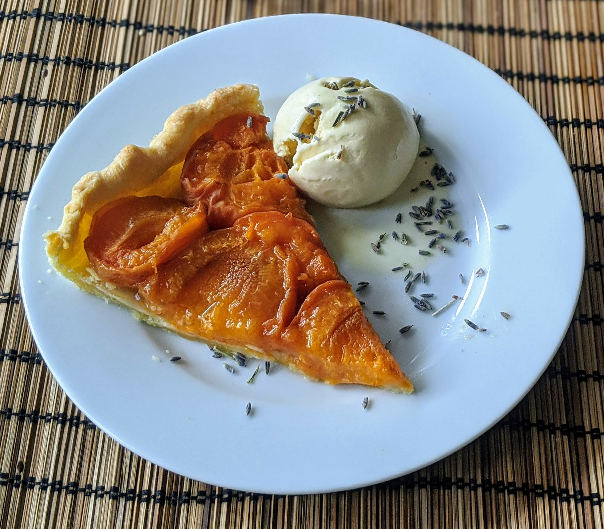

Glace au miel et à la lavande

Ici avec une part de [tarte aux abricots](TarteAuxAbricots.html)
Pour 60cL de glace:
- 50cL de crème entière
- 3-4 cuillères à soupe de lavande
- 100g de miel
- Le zeste d'un citron
- Trois jaunes d'œufs
- Faire chauffer la crème doucement dans une casserole avec la moitié des brins de lavande et le zeste de citron, presque jusqu'à ébullition.
- Dès que ça commence à vaguement faire des bulles, rajouter le miel et continuer à faire chauffer presque jusqu'à ébullition.
- Dès que ça recommence à vaguement faire des bulles, transférer la préparation dans un bol en la faisant passer dans une passoire fine.
- Ajouter les jaunes d'œuf un par un en fouettant pour que ça soit bien incorporé. Refaire chauffer le tout doucement, jusqu'à ce que ça épaississe (il faut que ça nappe bien le dos une cuillère : quand on passe le doigt sur la cuillère, ça doit former une belle ligne).
- Faire refroidir le tout au frigo quelques heures. Puis, passer à la sorbetière une demi-heure, et mettre au congélateur deux heures de plus pour que ça prenne une belle consistance.